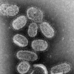

La influenza porcina y cómo combatir una pandemia
{kind=link}
El brote de un nuevo tipo de influenza es una preocupación a nivel mundial. Aunque al parecer no tiene la mortalidad que al principio se pensó, y algunas autoridades creen que la aparición de casos se ha estabilizado, la alerta continúa.
La historia de este brote de influenza, hasta el 2 de mayo de 2009, pueden verla en esta cronología.
Es importante que, aunque esta amenaza sea contenida y aunque resulte no ser muy peligrosa por el momento, tomemos en cuenta que una enfermedad de este tipo no es un incidente tan excepcional o aislado. Las enfermedades capaces de acabar con grandes proporciones de la población humana sin duda seguirán surgiendo.
Por ello, es importante saber de qué estamos hablando, y en particular, saber qué podemos hacer como grupo (sociedad, gobierno, naciones) para prepararnos cuando la amenaza sea mucho mayor.
Qué es una pandemia
Es una epidemia o afectación de una enfermedad infecciosa de personas a lo largo de un área geográficamente extensa sea un continente o hasta el mundo entero. Debe tener un alto grado de infectabilidad y trasladarse fácilmente de un sector geográfico a otro.
De acuerdo a la OMS, una pandemia vírica aparece cuando se reúnen 3 condiciones:
{kind=link}
- Que aparezca un virus nuevo, que no haya circulado previamente y por lo tanto, no exista población inmune a él.
- Que el virus sea capaz de producir casos graves de enfermedad.
- Que el virus tenga la capacidad de transmitirse de persona a persona de forma eficaz.
La OMS detalla 6 niveles de alerta de una pandemia, actualmente nos encontramos en el nivel 5. La información oficial de la OMS nos dicen que el nivel 5 y el probable nivel 6 significan:
La fase 5 se caracteriza por la propagación del virus de persona a persona al menos en dos países de una región de la OMS. Aunque la mayoría de los países no estarán afectados en esta fase, la declaración de la fase 5 es un indicio claro de la inminencia de una pandemia y de que queda poco tiempo para organizar, comunicar y poner en práctica las medidas de mitigación planificadas.
La fase 6, es decir la fase pandémica, se caracteriza por los criterios que definen la fase 5, acompañados de la aparición de brotes comunitarios en al menos un tercer país de una región distinta. La declaración de esta fase indica que está en marcha una pandemia mundial.
Según esa misma información (negritas mías):
Las pandemias anteriores se han caracterizado por oleadas de actividad repartidas durante varios meses. Cuando el número de casos disminuye, se requiere una gran habilidad comunicadora para compaginar esa información con la advertencia de que puede producirse otro ataque. Las olas pandémicas pueden sucederse a intervalos de meses, y cualquier señal de “relajación” puede resultar prematura.
Cómo detener una pandemia
La conferencia que les traigo fue presentada en TED, en el año 2006, y en esta charla el ponente habla de la probabilidad de que una nueva pandemia se presentara antes de 3 años.
Pero lo más importante es que se expone de forma contundente la manera de anticipar y encarar una amenaza de este tipo.
El ponente
Larry Brilliant es un médico, epidemiólogo y escritor estadounidense, participó en la lucha contra la viruela en la India y en su final erradicación, es cofundador del proyecto Seva, fue profesor de Salud Internacional en la Universidad de Michigan, participó en los esfuerzos de la OMS por erradicar la polio y como voluntario en Sri Lanka por el desastre del tsunami. De 2006 a 2009 fue director ejecutivo de Google.org, la división filantrópica de Google.
{kind=link}
En el año 2006 fue ganador del Premio TED, y en esa ocasión dio la siguiente charla.
Larry Brilliant explica en esta conferencia cómo es la lucha contra una pandemia, hablando sobre la lucha contra la viruela y la polio, y en particular describe los peligros de una pandemia de influenza, y cómo es posible prevenirla y enfrentarse a ella.
La conferencia: Cómo detener una pandemia
[Charla completa en YouTube por cortesía de Keny. Para conexiones lentas, desactivar el botón HQ.]
Descarga* este video en HQ (850×480): Parte 1.rar Parte 2.rar Parte 3.rar (video 273 MB)
-Reunir las 3 partes en la carpeta deseada y extraer con WinRAR.
Video: mp4, audio: AAC
Traducción y subtitulado: Ajmme Kajros
En TED: TED Prize wish: Larry Brilliant wants to stop pandemics.
*Archivo subtitulado y distribuido bajo los términos de uso de TED Conferences LLC.
Metadatos y acciones
 Temas: biologia, ciencia, medicina, tedtalk, vida, video ⋅
Para guardar: Enlace permanente a esta anotación.
Temas: biologia, ciencia, medicina, tedtalk, vida, video ⋅
Para guardar: Enlace permanente a esta anotación.
 Print This Post
Print This Post
Comentarios
Los comentarios están cerrados.
Categorías
Últimas 4 anotaciones
Últimas anotaciones en cada categoría

Divulgación
El dinero no fomenta la creatividad: Daniel Pink en TEDGlobal 2009

Inspiración
Los 30 no son los nuevos 20

Noticias
Ver tu mente en tiempo real: Christopher deCharms en TED 2008
![Música en la era digital [Animación]](../../../wp-content/themes/tma/images/featured/animation_04_2009_featured.jpg)
Ocio
Música en la era digital [Animación]
mayo 3, 2009, 2:43 pm
Información Bitacoras.com…
Valora en Bitacoras.com: Simulación del nuevo virus El brote de un nuevo tipo de influenza es una preocupación a nivel mundial. Aunque al parecer no tiene la mortalidad que al principio se pensó, y algunas autoridades creen que la aparición de c…
junio 1, 2009, 11:11 am
Sos un groso man!!! gracias por tu aporte, de verdad.